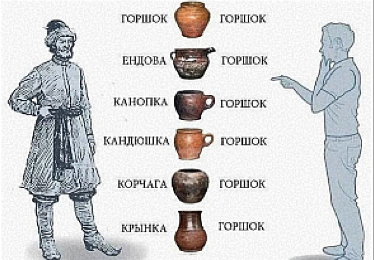
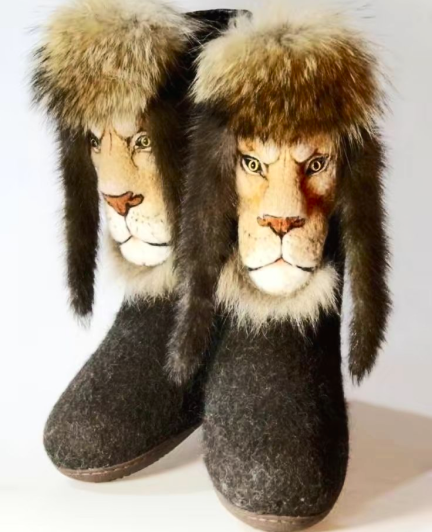

ПОЧЕМУ ВСЕ ДВИЖУХИ БЫЛИ
ПРИ ЦАРЕ ГОРОХЕ?
[если этот вопрос мучил вас ночью,
то уведайте наш сказ и спите спокойно]

ЛАПТИ — САМЫЕ ХАЙПОВЫЕ ТАПКИ НА РУСИ?
[Рассказываем об истории лаптей,
из чего делали И как носили]
ендова, корчага и горшок — состав рок-бойсбэнда?
[погодите, разве это не горшок?
не спеши отчаиваться,
СЕЙЧАС РАЗБЕРЕМСЯ]
ГДЕ НАХОДИТСЯ КУДЫКИНА ГОРА И ЧТО ЭТО ВООБЩЕ ТАКОЕ?
[Рассказываем ОТКУДА ПОЯВИЛОСЬ НАЗВАНИЕ
ЭТОГО ПЛЭЙСА И ГДЕ ЕГО КООРДИНАТЫ]
зачем бабушке «юрьев день» и когда он был??
[объясняем почему история «юрьева дня»,
это рассказ о несбывшихся ожиданиях]
ВАЛЕНКИ — ЛУЧШИЙ ДРИП
ДЛЯ СУРОВОЙ ЗИМЫ?
[как найти замену любимым уггам?
расскажем об отличном варианте]
